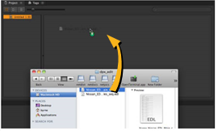
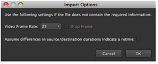
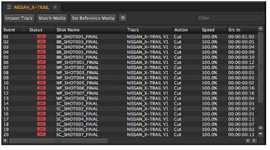
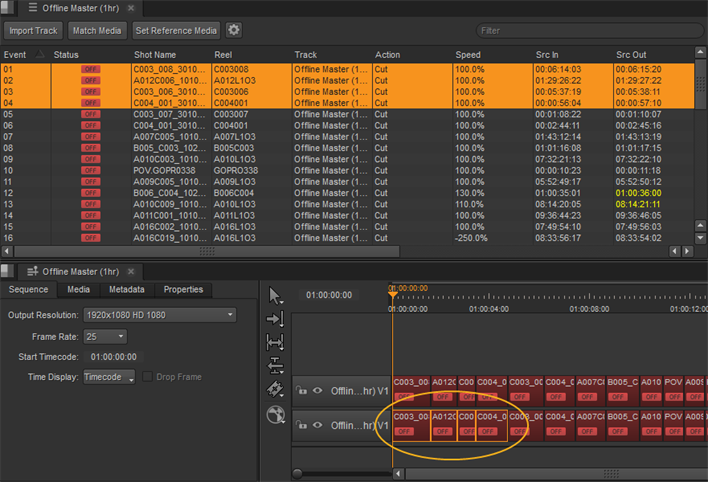
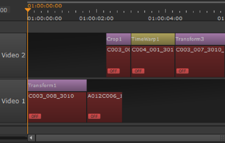

Nuke 工作室 允许您根据您的偏好，以两种方式之一导入 EDL 、 AAF 和 XML 序列。要么:
• 导航到 文件 > 导入 EDL/XML/AAF ,使用浏览器找到 EDL 、 AAF 或 XML，然后选择文件并单击 打开 导入序列。
OR
• 将 EDL 、 AAF 或 XML 文件直接从文件浏览器拖放到界面中。

如果您要导入 EDL，请记住文件中没有保证的帧速率信息，因此 导入选项 对话框显示。

| 1。 | 如果需要，请选择正确的帧速率并使用以下复选框: |
• 下降帧 -启用时，EDL 假定包含删除文件信息。请参阅 时间线播放工具 欲了解更多信息。
• 假设源/目标持续时间的差异表示重定时 -启用后，源剪辑 (Src) 和剪辑实例 (Dst) 持续时间之间的任何差异都被视为重定时。
| 2. | 单击 好 要导入。 |
XMLs 和 AAFs 导入到 Nuke 工作室 支持在第三方应用程序 (如 Adobe Premiere 或 Apple Final Cut Pro) 中实施的转换和裁剪编辑决策。XMLs 还支持 retimes。信息在 。Xml 或 。Aaf 使用软效果 (如变换和裁剪) 和时间扭曲来解释非线性重定时。常数线性重定时的处理方式与以前版本的相同 Nuke 工作室 .
注意:
非线性动画曲线
。Xml
导入时可能不会像预期的那样出现，但关键帧与源帧相同。因此，您可能需要调整曲线上的控制柄，以匹配 “曲线编辑器” 或 “摄影表” 中关键帧之间的素材。
请参阅
此外，Premiere Pro
。Xml
导出仅支持恒定的线性重定时。因此，半速夹的情况下,
Nuke 工作室
时间轴可能与 Premier Pro 时间轴上的时间轴不匹配，因为某些非线性重定时数据没有写入导出的
。Xml
文件。
导入 EDL 、 AAF 或 XML 后, 符合 工作空间显示，电子表格和时间线用离线剪辑填充 -- 媒体位置未知。
注意: 的 事件 列表示剪辑在时间轴上的位置，而不是编辑中的事件编号。

请注意，单击电子表格中的条目会突出显示时间轴上的相应剪辑实例？

查看序列时，电子表格、时间轴和查看器链接在一起。如果当前工作区中存在合适的屏幕房地产，双击序列将强制自动打开关联的面板。如果要关闭链接组中的单个面板，请按住 Alt 关闭链接面板时，修改器将关闭组中的所有面板。
注意: 如果您导入了一个 XML 序列，您可能会发现 Nuke 工作室 已自动为您匹配媒体。
任何来自第三方软件的转换、裁剪或重定时编辑决策 。Xml 和 。Aaf 文件使用软效果。这些效果与它们关联的剪辑实例一起导入。

|
|